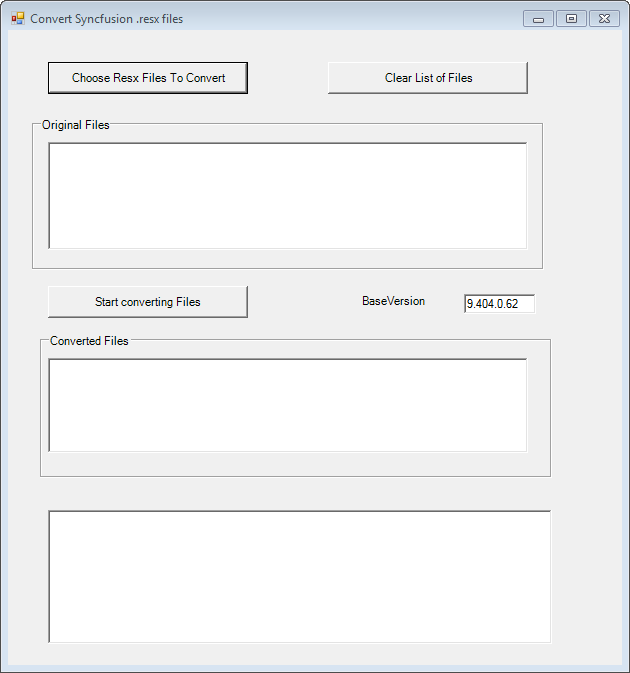
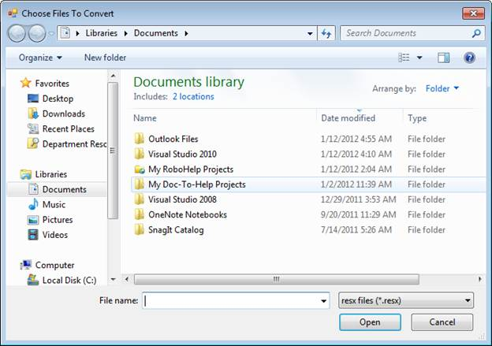
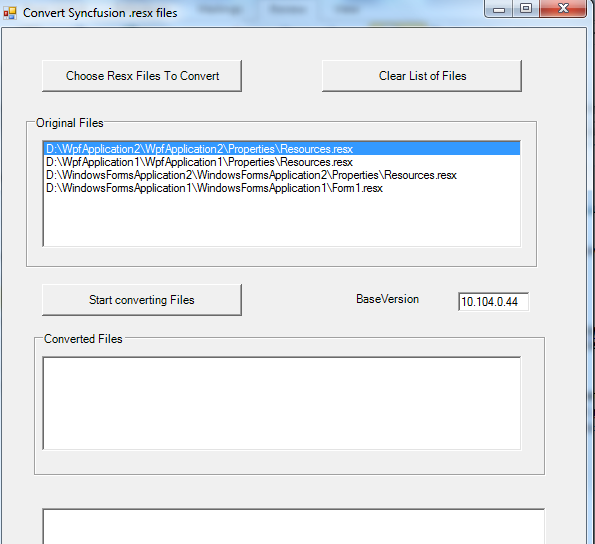
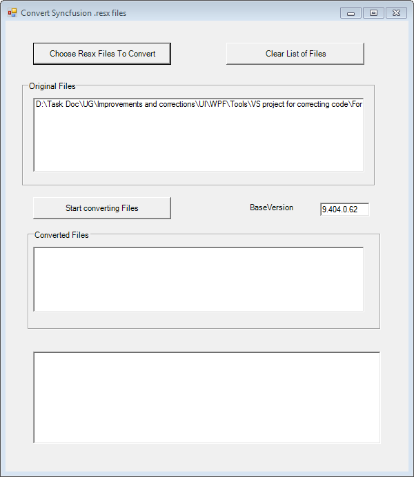

ConvertResx Utility is shipped along with our Essential Studio package to facilitate end-users to easily migrate to a newer version of Essential Studio. When a user creates a project using Essential Studio, the studio version number is hard coded in the .resx file. This results in compilation error for a project, when the studio is upgraded to a newer version. Hence while migrating to a newer version of Essential Studio from an earlier version, the .resx files also need to be migrated. This utility allows you convert the older .resx files easily.
This section covers information on the following topics:
· Accessing ConvertResx Utility
· Converting .resx files
Accessing ConvertResx Utility
To access ConvertResx utility:
1. Click Start -> All Programs -> Syncfusion -> Essential Studio<Version Number> -> Utilities -> Migration -> ConvertResx (Framework 2.0) / ConvertResx (Framework 3.5) / ConvertResx (Framework 4.0)
The Convert Syncfusion .resx files dialog box opens. The BaseVersion box displays the version number of the currently installed Syncfusion assemblies (10.102.0.44 for .NET Framework 2.0, 10.103.0.44 for .NET Framework 3.5 and 8.104.0.26 for .NET Framework4.0).

Figure 133: ConvertResX Utility
 Note: Alternatively, the utility can be accessed
from the following locations:
Note: Alternatively, the utility can be accessed
from the following locations:
· For 2.0 framework, [Install Drive]:\Program Files\Syncfusion\Essential Studio\<Version Number>\Utilities\Migration\2.0\ConvertResX.exe.
· For 3.5 framework, [Install Drive]:\Program Files\Syncfusion\Essential Studio\<Version Number>\Utilities\Migration\3.5\ConvertResX.exe.
· For 4.0 framework, [Install Drive]:\Program Files\Syncfusion\Essential Studio\<Version Number>\Utilities\Migration\4.0\ConvertResX.exe.
Converting .resx Files
The following steps illustrate how to convert the older .resx files:
1. Open the Convert Syncfusion .resx files dialog box.
Figure 134: Convert Syncfusion .resx files dialog box
2. Click Choose Resx Files To Convert. The Choose Files To Convert dialog box opens.

Figure 135: Choose Resx Files To Convert Dialog Box
3. Select the required .resx files (of the older version) to be converted.
4. Click Open.
Note: The path of the selected file is displayed
in the Original Files box. This can be cleared from the Original Files box by
selecting the required file and clicking Clear List of Files.

Figure 136: Original Files
5. Click Start converting Files to convert the .resx files.
The path of the converted files will be displayed in the Converted Files box. The last box displays the total number of version entries changed in the converted .resx file. It changes the version details in the .resx file to the existing base version. This is only applicable for Windows platform applications.

Figure 137: Converting
Note: After the conversion, the new .resx files
will have the same name as the original files. Copies of the original files will
be renamed with a .OLD suffix added to their names.